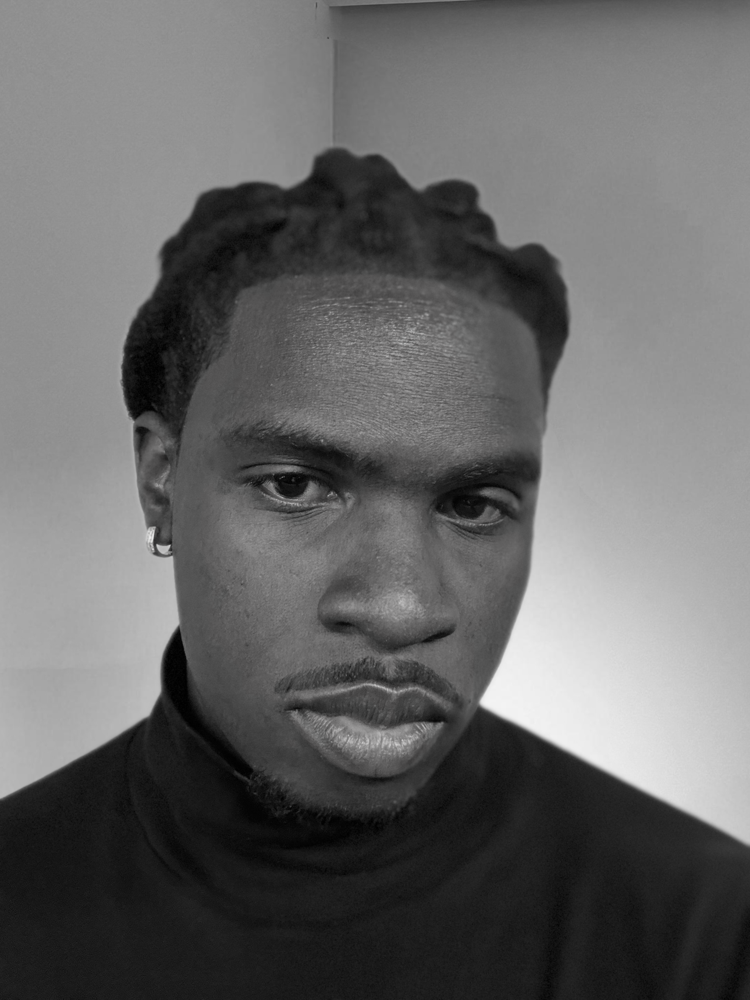

Evan Butler is a contemporary artist. Without formal training in the fine arts, Butler has developed a multidisciplinary artistic practice spanning several media.
Late 2022 marked Butler's emergence as an artist using both traditional and digital painting techniques. Throughout 2023, he expanded his practice into 3D design, developing an unfinished game and an experimental short film (Untitled) that was later completed in 2026.
During the summer of 2023, Butler began work on an animated short film that remained unfinished. In the same period, he produced Untitled (2023), one of his earliest major works.
In early 2024, Butler's practice shifted toward artificial intelligence as both a conceptual and technical framework, informing his artistic and academic trajectory. Alongside the production of East Asian-influenced concept art, he engaged with AI as a generative medium prior to enrolling in the AI Systems course at the Tokyo Institute of Technology.
Toward the end of 2024, Butler's work increasingly engaged with violent imagery and depictions of destitute urban environments. He subsequently paused his artistic practice following relocation to New Jersey under precarious living conditions.
In June 2026, Butler began development on his first solo exhibition, The Atelier.